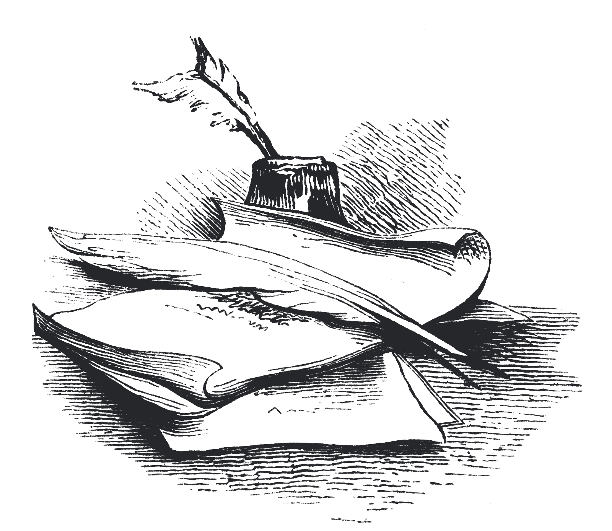
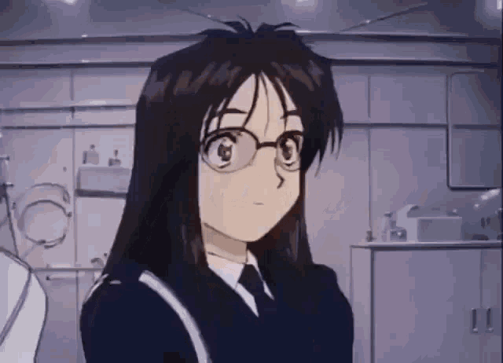

ARTICLE #006
IN SEARCH
OF PURPOSE
;OR
THE STRANGE CASE OF
HAVING CONQUERED UNIVERSITY

PUBLISHED IN THE YEAR MMXXIV
Introduction
This is mostly an off the cuff piece, written late at night when I should be sleeping. The contents of it are regarding my thoughts and troubles over the past few months. I'd say, dear reader, don't pay much attention to this, unless you also find yourself in this situation, but do not think this piece will hold the anwers you seek. Not at all. Instead let this be a piece of proof, a victim's testimony, that you are not alone in what you're experiencing.
Begining of the End
I've recently graduated from university. Hurrah. You may notice my severe lack of enthusiasm about this. So why is that? Well, let us start from the last few months of university. I had gone through quite a nasty break-up, which made me appreciate more that which I had in my life. For the last year I had moved in with my friends, yet barely managed to spend any quality time with them. I do not wish to slander my former partner in this piece, we were merely incompatible. Her need for quality time far outweighed what I could offer if I were to keep a healty lifestyle. I now see glimpses of the other side of this relation through my own experience, however we shall return to this at a later point.
What is certain, dear reader, is that my realisation came quite late. Exam season was fastly approaching, meaning so would my tenancy, and, in turn, my possible quality time with the friends I made while there. I am still incredibly grateful that they welcomed me back in the fold after such a long time. Sure, we were living in the same house, but things got pretty cold as I spent less and less time with them, even hostile at times, though never all out malicious. Either way, with my return we decided to amp up the number of activities while we still had time. We watched plenty of movies, created new inside jokes, even invented our own holiday (See: Craic Day... or don't just yet𐠲𐠲. Still under construction! ). Things were, for the most part, going well.
You see, at that time, even if things were tough, I had a routine. Well, I say routine, but I was never much a fan of such a thing as routine. But even if money began to run low, I made a habit of visiting the local charity shops nearly every day. I had an order I would tackle them in. I had lectures to attend to, even though they were a drag, and many a time I would arrive to late, they would serve as motivation to get out of the house. I had the student union pub, where my dearest friend KP and I would stop at nearly every day, for a Diet and Regular coke respectivelly, and chat about whatever ideas we had in the past few hours (student's minds are really a powerhouse if the topic of discussion isn't coursework, though coursework was discussed plenty as well, especially during the exam season), him and I would also have our different routes we'd like to take, be it by the shops, or the late night insomniac routes through the city center. Sure we lived together, but a change of scenery never hurts!
A fair few nights leading into and out of exam week the guys and I would have a drinking night in the house, grabbing a crate of beer, maybe some whiskey on occasion, and enough illegaly imported cheap cigarette packs𐠳𐠳. For legal purposes this last bit is a joke! A double joke, even. Neither me, nor my associates would ever purchase illicitly imported goods, nor would we smoke said tobacco in a rented accomodation, against the terms of the lease. Haha!!!! What a funny joke!!!!!!! to last us through the night, drinking, smoking, and singing (often a mix of Russian music like 5'nizza's Soldat, Alina Gingertail covers of Witcher music, city pop, and whatever else may be decided on that night). After such a night, most regular people would sleep, and my friends (despite their abnormalities) would too! I, however, was almost always baited out by the show of colours the sunrise put on. I would grab my black trench coat, digital camera, and venture into the city looking for good photography opportunities.
The point of all this, is to say that I built something while there. I built friendships, hobbies, formed habbits, discovered places, met people. Even at the most stressful of times, many sleepless nights deep into exam week, pulling assignment all-nighters, those things were still there. I could still go to the pub, or the charity shops, I would do my studying with friends, sharing a pack of energy drinks, or a packet of cigs, just to make it through the learning material. Even when money began to run low, we would pool together change to get the cheapest energy drinks available, or share whatever pasta or rice we had through the cabinets with each other. And charity shops are free to walk through just to admire stuff you can't afford, you know?
But I knew all this can't last forever. With funds getting lower and lower, the final exam would mark the end of my presence in my university city, and that date surely was not taking its time.
Ending Before Begining
And as soon as that date finally reached, it came gently, as gently finally laying your head on your home pillow, and stretching your body after a long day moving out. Only that grace, that gentleness, was not meant to last. It was a simple kiss goodbye of university life. As the feeling of its lips on my cheek slowly faded, the chill set in, the night began to set, the wind picked up its pace. Summer began, but the Lord, and the Lord alone knows it felt nothing like summer. No, the mental winter has set in, and not the white Christmas sort. No, it was a soviet January, blackened tarry snow filling up every crevice my feet hadn't stepped in, pacing around up and down with despair at my newest predicament.
Gradually, it became apparent to me that all that I built, all that I had, was now lost, with no chance to build something new in sight. I started working on a video game idea, and that was good to keep me sane for a while. But the days began bluring into each other. Each day I would wake up, apply for jobs for hours on end, on every platform under the sun, check emails just to find rejections and junk mail, work on my game idea, eat, and sleep. After a month, this began to get old. No reason or money to go outside. Even a walk would be stressfull, because I should be home applying for jobs. No support from my university to help me start a career in my chosen degree subject (which technically should have been a good pick. Economics and Finance is not supposed to be a useless degree.) My family and I expected the job hunt to be easy. This is supposed to be one of those degrees, which, combined with your wits and hard work, should set you on a path for a comfortable life. I lost hope in that first, and after 2 months of searching in vein, I believe my family has too.
This is the modern world. You need experience to get a job. You need a job to get experience. An entry level job requires two years of experience. And that's when they tell you what they want! Most rejections are automatic, machine generated emails. Even having experience in the field they require is useless, no one is ACTUALLY hiring! The modern job market is populated by quota-filler listings, required to be posted, for positions employers are not looking to hire for! This is not just schizo-theorising, it is proven fact𐠴𐠴. See: Quartz's article on this. It's one of many such articles.. Starting on the path to a degree, going through the university system, doomed this journey to a terrible end before it even started.
Of the 500-ish jobs I applied to, I had a total of 3 non-rejection responses. These applications spanned over multiple platforms. The main was Indeed, with around 400 of the total applications I made. TotalJobs took up another 50 or so of the applications. The rest of the 50 applications were spread over other recruitment websites, the local council website, and other miscellaneous websites,as well as a round of trying to apply in person at the local pubs or cafes. I even tried registering with an online agency, to no avail. Tried to reach out online to small companies I enjoy, providing a CV and personal introduction, yet again, to no avail.
So what were those three positive responses? The first two were sales relates, and I thought there would be some hope in there. I had an interview for one of them, only to realise it was a door-to-door sales position (The language on the listing was really sneaky about it, but looking back, with some deeper thought, I would have figured it out). I immediately ditched them upon realising that. Now the second one, that one I had some hope for! It was an office possition, part-time but thats better than nothing. I went to the interview, and though it was far, I really liked the place. Got along well with interviewers, and a day later I was informed I got the position. This was in mid-August. I was told my induction would be on the 23rd of September, but that I will likely get to start earlier than that. What followed was the slowest month of my life, and as the hiring questions continued, despite my signing the contract, It felt more and more like they did not want to hire me.
An End to Endings, a Beginning to Beginnings?
Eventually, this morning, I received a call. It was from the office employers. I am confirmed to have my induction day on the 23rd. I really started thinking they do not want to hire me anymore. That may still be the case. I hope it's not. I hope this is a true beginning, and an ending of this summer-long spiral of "it's so over". It is definitlly not a finance or economics job. It is just above minimum wage and only 20 hours a week. But maybe. MAYBE. Maybe this is a place to start. Maybe this can help me get on my feet. If it doesn't grow into a carreer, at least it allows me to make some new connections, and grants me the funds to start working on something that will get me a career. If not that, then maybe at least it lets me get out of the house, grants me a purpose for half of the week, however small.
This summer has been, by far, one of the dullest, if not worst of my whole life (and I've had some terrible summers). I suppose now I better understand why my ex acted in such a way. The job market is trully terrible, likely even worse if you graduate from a humanities degree as she did, and being unemployed and without a purpose for so long drives one to cling to anything they have with such terrible strength that it pushes those things away. That's not to say I will now just try to get back with my ex, we both had problems outside of this. However I do appreciate the level of knowledge of the other side this has granted to me. I have been a fair bit clingy to people in my life as well over this period, and my void of purpose only lasted a few months. It's not quite over, but it's end feels close.
Dear reader, perhaps you are in university as you read this, or perhaps you are starting it soon. Here's a word of warning for you: The happiness of conquering univesity doesn't last forever. The path in life is not clear after that. Humans are built in such a way that they always seek the next thing to conquer, the next thing to strive towards. Fully enjoy and appreciate that which you build and grow during your time in university. If you haven't started university yet, perhaps consider an apprenticeship! That route will grant you experience and connections too, as well as letting you earn while you learn.
And speaking of learning, I hope you learnt something while reading this article. It's a bit all over the place, and it took me a few days to write, but I felt such a nausating experience needs to be documented, lest it be forgotten. Not that I see myself being fresh out of university again anytime soon, but perhaps you may find it useful, or comforting, or derive some sort of schadenfreude out of it. Who's to say?
Who's to say?